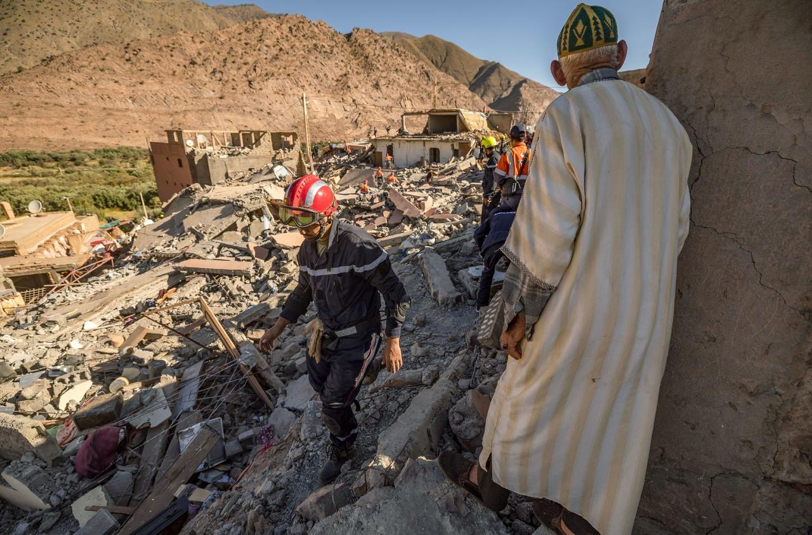

The powerful earthquake that struck Morocco Friday night has killed more than 2,900 people, injured many more, and affected hundreds of thousands in sections of the country that suffered severe damage. It was the strongest quake to hit the country in over a century. Frantic rescue efforts to find survivors continue, and widespread destruction could be seen from Marrakech to the High Atlas Mountains. In mountain villages, roads have been blocked by rockslides, making it nearly impossible to reach those still trapped. The need for aid is immense and urgent. "When you donate to local organizations, you're helping in more than one way. You're helping to create jobs locally & strengthen local capacity, too," Dr. Céline Gounder, a CBS News medical contributor and editor-at-large for Public Health at KFF, wrote on social media. Gounder was in Morocco when the earthquake hit.

If you want to donate to help those affected by the earthquake, here are some ways to do so:
High Atlas Foundation
Banque Alimentaire
CARE Morocco, which launched in 2008, focuses on youth and disadvantaged groups in rural areas of the country. In the aftermath of the earthquake, CARE Morocco says its emergency response "prioritizes women and girls, the elderly, families with young children, and those unable to access other emergency services." You can donate to its Earthquake Emergency Fund here. IFRC and Moroccan Red Crescent The International Federation of the Red Cross is working with the Moroccan Red Crescent on the ground to assist in rescue operations. They are also providing first aid and psychosocial support to the injured. "The challenges are vast. The search and rescue effort is the focus at this point – and trying to get heavy machinery into those remote areas of the Atlas Mountains to help with that is a priority," Caroline Holt, IFRC crises director, said in a statement. You can donate to the IFRC here. Picture